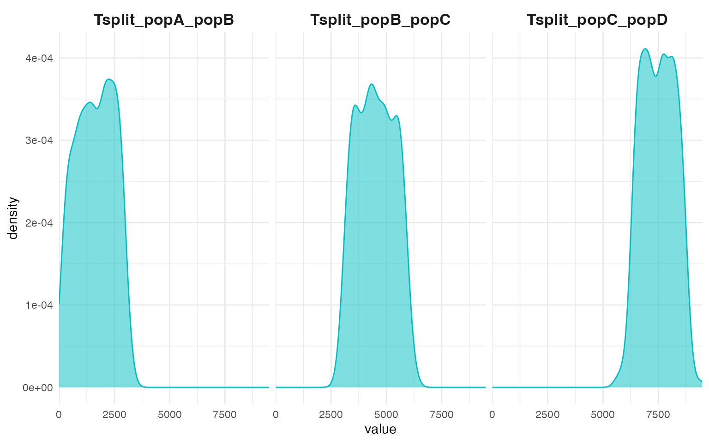
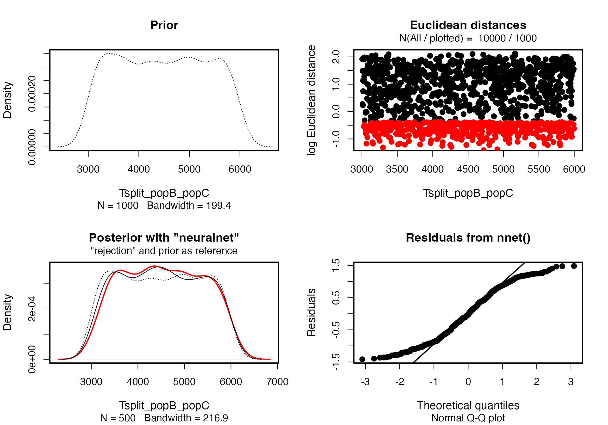
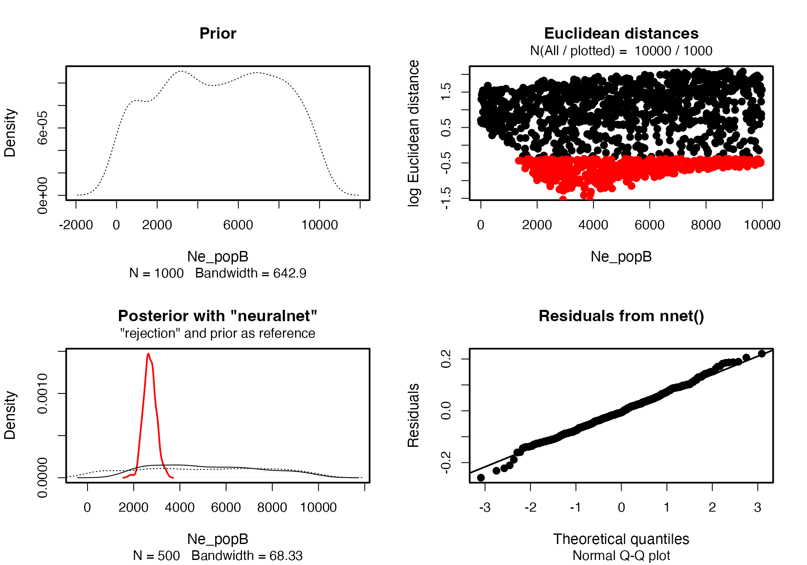

A basic ABC analysis
vignette-01-basic-abc.RmdThis vignette contains an expanded version of the basic ABC inference example from the homepage of demografr.
Introduction
Imagine that we sequenced genomes of individuals from populations “popA”, “popB”, “popC”, and “popD”.
Let’s also assume that we know that the three populations are phylogenetically related in the following way but we don’t know anything else (i.e., we have no idea about their \(N_e\) or split times):
After sequencing the genomes of individuals from these populations, we computed nucleotide diversity in these populations as well as their pairwise genetic divergence, and observed the following values which we saved in two standard R data frames:
- Nucleotide diversity in each population:
diversity_df
#> stat value
#> 1 pi_popA 3.962604e-05
#> 2 pi_popB 9.827821e-05
#> 3 pi_popC 1.501280e-04
#> 4 pi_popD 1.286567e-04- Pairwise divergence d_X_Y between populations X and Y:
divergence_df
#> stat value
#> 1 d_popA_popB 0.0001984640
#> 2 d_popA_popC 0.0001991969
#> 3 d_popA_popD 0.0001999640
#> 4 d_popB_popC 0.0001825852
#> 5 d_popB_popD 0.0001832798
#> 6 d_popC_popD 0.0001754839Now let’s develop a simple ABC pipeline which will infer the posterior distributions of two sets of parameters we are interested in: \(N_e\) of each population lineage, as well as split times between our populations of interest.
Developing the ABC pipeline
Let’s begin by loading demografr together with two helper R packages. First is dplyr, which we use for convenient table munging, the other is slendr which is required for building and simulating demographic models.
For the purpose of the ABC analysis below, we will bind all statistics in an R list, naming them appropriately. The names of each statistic (here “diversity” and “divergence”) have meaning and are quite important for later steps:
observed <- list(diversity = diversity_df, divergence = divergence_df)Setting up a “scaffold” model
The first step in a demografr ABC analysis is setting up a “scaffold” model for which we will estimate the posterior parameters of interest.
One way to do this is by building a normal slendr model (for
instance, a model such as this).
However, for simpler models like ours, it can be easier to input the
scaffold as a standard phylogenetic tree (here we use the function
tree_model() to input a tree in the Newick
format).
model <- tree_model(tree = "(popA,(popB,(popC,popD)));", time_span = 10000)(Note that the parameter time_span indicates how much
evolutionary time does of our model cover, in units of generations.
Support for arbitrary units such as years will be supported soon.)
Because the model object contains a standard
slendr demographic model, we can inspect it as such, to make
sure everything is set up correctly:
model
#> slendr 'model' object
#> ---------------------
#> populations: popA, popB, popC, popD
#> geneflow events: [no geneflow]
#> generation time: 1
#> time direction: forward
#> total running length: 10000 model time units
#> model type: non-spatial
#>
#> non-serialized slendr model
plot_model(model)
Note that we don’t pay attention to the split times or population sizes of this model because we will be fitting those parameters with the ABC procedure below—the model we just constructed is really just a scaffold capturing some prior information we have about the phylogenetic relationship between populations, the values of other model parameters (\(N_e\), split times) are arbitrary.
That said, we have the option to fix some aspects of our model by building and fine-tuning the model using standard slendr features for defining models rather than importing the model as a phylogenetic tree (see this slendr vignette).
Setting up priors
We are interested in estimating the \(N_e\) of all populations and their split times. demografr makes this very easy using a familiar symbolic formula syntax in R:
priors <- list(
Ne_popA ~ runif(1, 10000),
Ne_popB ~ runif(1, 10000),
Ne_popC ~ runif(1, 10000),
Ne_popD ~ runif(1, 10000),
Tsplit_popA_popB ~ runif(1, 3000),
Tsplit_popB_popC ~ runif(3000, 6000),
Tsplit_popC_popD ~ runif(6000, 9000)
)In an ABC simulation step below, the formulas are used to draw the values of each parameter from specified distributions (in this case, all uniform distributions across a wide range of parameter values).
Defining summary functions
Each run of a demografr ABC simulation internally produces a tree sequence as an output. Because tree sequence represents an efficient, succint representation of the complete genealogical history of a set of samples, it is possible to compute population genetic statistics directly on the tree sequence without having to first save each simulation output to disk for computation in different software. Thanks to slendr’s library of tree-sequence functions serving as an R interface to the tskit module, you can specify summary statistics to be computed for ABC using plain and simple R code.
In our example, because we computed nucleotide diversity and pairwise
divergence in the individuals sequenced from populations “p1”, “p2”, and
“p3”, we will define the following functions. Crucially, when run on a
tree-sequence object, they will produce an output data frame in the
format analogous to the empirical statistics shown in data frames
diversity and divergence above:
compute_diversity <- function(ts) {
samples <- ts_samples(ts, split = TRUE)
ts_diversity(ts, sample_sets = samples) %>%
mutate(stat = paste0("pi_", set)) %>%
select(stat, value = diversity)
}
compute_divergence <- function(ts) {
samples <- ts_samples(ts, split = TRUE)
ts_divergence(ts, sample_sets = samples) %>%
mutate(stat = sprintf("d_%s_%s", x, y)) %>%
select(stat, value = divergence)
}
functions <- list(diversity = compute_diversity, divergence = compute_divergence)Crucially, the outputs of these summary functions must match the format of the observed summary statistics (i.e., the data frames produced must have the same format). This minor inconvenience during ABC setup saves us the headache of having to match values of statistics between observed and simulated data during ABC inference itself.
ABC simulations
Having defined the scaffold model, a set of priors for our parameters
of interest (\(N_e\) and split times),
as well as two summary statistic functions, we can plug all this
information into the function simulate_abc().
Before we run a potentially computationally costly simulations, it is
a good idea to validate the ABC components we have so far assembled
using the function validate_abc():
validate_abc(model, priors, functions, observed)
#> ============================================================
#> Standard slendr model provided as a scaffold
#> ============================================================
#> Checking the correct syntax of population names... ✓
#> Checking the correctness of prior parameter names... ✓
#> ------------------------------------------------------------
#> Testing sampling of each prior parameter:
#> * Ne_popA ✓
#> * Ne_popB ✓
#> * Ne_popC ✓
#> * Ne_popD ✓
#> * Tsplit_popA_popB ✓
#> * Tsplit_popB_popC ✓
#> * Tsplit_popC_popD ✓
#> ------------------------------------------------------------
#> Modifying the scaffold model with sampled prior values... ✓
#> ------------------------------------------------------------
#> Simulating a tree sequence from the constructed model... ✓
#> ------------------------------------------------------------
#> Computing user-defined summary functions:
#> * diversity ✓
#> * divergence ✓
#> ------------------------------------------------------------
#> Checking the format of simulated summary statistics:
#> * diversity ✓
#> * divergence ✓
#> ============================================================
#> No issues have been found in the ABC setup!Having verified that all model components are set up correctly, we
can proceed to the ABC simulations themselves, using
demografr’s function simulate_abc():
data <- simulate_abc(
model, priors, functions, observed, iterations = 100,
sequence_length = 10e6, recombination_rate = 1e-8, mutation_rate = 1e-8
)Because running the full ABC on thousands of simulation replicates would take too long, we will cheat a little bit here and load the ABC simulation data directly from a file distributed with the package:
data <- readRDS(system.file("examples/01_data.rds", package = "demografr"))At this point we have generated summary statistics for simulations of models using parameters drawn from our priors. In the next step, we can finally do inference of our parameters.
ABC inference
Having all the information about observed and simulated data bound in
a single R object abc_data, we can finally perform the ABC
inference. demografr includes a convenient function
perform_abc() which reformats the simulated and observed
data in a format required by the R package abc and
internally calls the function
abc() of that package.
Note that perform_abc is just convenience wrapper around
the abc() function in the package
abc, saving us a little work juggling the necessary matrices manually. As such, all parameters of the functionabc()can be provided toperform_abc()`,
which will then pass them on appropriately.
abc <- perform_abc(data, tolerance = 0.05, method = "neuralnet")
#> Warning: All parameters are "none" transformed.
#> 12345678910
#> 12345678910Inspecting the posteriors
Extracting posterior summary tables
Now that we have the ABC output object ready, we can get a data frame with summary statistics of the posterior distributions of our parameters. For instance, we can easily read the maximum a posteriori probability (MAP) of the parameters in the row labelled “Weighted Mode:”:
extract_summary(abc)
#> Ne_popA Ne_popB Ne_popC Ne_popD Tsplit_popA_popB
#> Min.: 878.8014 1780.394 7630.407 1918.176 -30.42729
#> Weighted 2.5 % Perc.: 1051.9572 2228.788 8094.783 2558.055 122.77767
#> Weighted Median: 1440.8680 2660.364 8810.756 3153.811 1549.07714
#> Weighted Mean: 1501.4152 2681.990 8816.794 3178.400 1522.50911
#> Weighted Mode: 1181.3398 2641.655 8794.326 3034.724 2322.57187
#> Weighted 97.5 % Perc.: 2176.6469 3236.581 9657.190 3875.698 2881.71222
#> Max.: 2556.7822 3777.090 10147.025 4247.706 3291.55469
#> Tsplit_popB_popC Tsplit_popC_popD
#> Min.: 2940.514 5872.130
#> Weighted 2.5 % Perc.: 3171.989 6459.630
#> Weighted Median: 4497.437 7824.452
#> Weighted Mean: 4529.729 7779.635
#> Weighted Mode: 4346.200 8022.213
#> Weighted 97.5 % Perc.: 5922.436 9096.519
#> Max.: 6188.116 9953.798Because large tables can get a little hard to read, it is possible to subset to only a specific type of parameter:
extract_summary(abc, type = "Ne")
#> Ne_popA Ne_popB Ne_popC Ne_popD
#> Min.: 878.8014 1780.394 7630.407 1918.176
#> Weighted 2.5 % Perc.: 1051.9572 2228.788 8094.783 2558.055
#> Weighted Median: 1440.8680 2660.364 8810.756 3153.811
#> Weighted Mean: 1501.4152 2681.990 8816.794 3178.400
#> Weighted Mode: 1181.3398 2641.655 8794.326 3034.724
#> Weighted 97.5 % Perc.: 2176.6469 3236.581 9657.190 3875.698
#> Max.: 2556.7822 3777.090 10147.025 4247.706
extract_summary(abc, type = "Tsplit")
#> Tsplit_popA_popB Tsplit_popB_popC Tsplit_popC_popD
#> Min.: -30.42729 2940.514 5872.130
#> Weighted 2.5 % Perc.: 122.77767 3171.989 6459.630
#> Weighted Median: 1549.07714 4497.437 7824.452
#> Weighted Mean: 1522.50911 4529.729 7779.635
#> Weighted Mode: 2322.57187 4346.200 8022.213
#> Weighted 97.5 % Perc.: 2881.71222 5922.436 9096.519
#> Max.: 3291.55469 6188.116 9953.798Alternatively, we can also extract the posterior summary for a single parameter like this:
extract_summary(abc, param = "Ne_popD")
#> Ne_popD
#> Min.: 1918.176
#> Weighted 2.5 % Perc.: 2558.055
#> Weighted Median: 3153.811
#> Weighted Mean: 3178.400
#> Weighted Mode: 3034.724
#> Weighted 97.5 % Perc.: 3875.698
#> Max.: 4247.706Visualizing posterior distributions of parameters
Because a chart is always more informative than a table, we can
easily get a visualization of our posteriors using the function
plot_posterior():
plot_posterior(abc, type = "Ne")
Excellent! It looks like we got really nice and informative posterior distributions of \(N_e\) values!
In contrast, it looks like the posterior distributions for split times are not as informative compared to the priors that we specified:
plot_posterior(abc, type = "Tsplit")
#> Warning: Removed 4 rows containing non-finite values (`stat_density()`).
Because the internals of demografr ABC objects are
represented by standard objects created by the abc package, we
have many of the standard diagnostics functions of the abc R
package at our disposal. For instance, we can use the standard function
plot() to verify that the posterior (red line) for one of
the split times matches the prior (dashed line), suggesting that the
data we provided (nucleotide diversity and pairwise divergence) are not
sufficient statistics to capture enough information about population
divergences.
plot(abc, param = "Tsplit_popB_popC")
In contrast, we can see that there most definitely is sufficient information encoded in the summary statistics to tell us quite a bit about the \(N_e\) of our populations:
plot(abc, param = "Ne_popB")